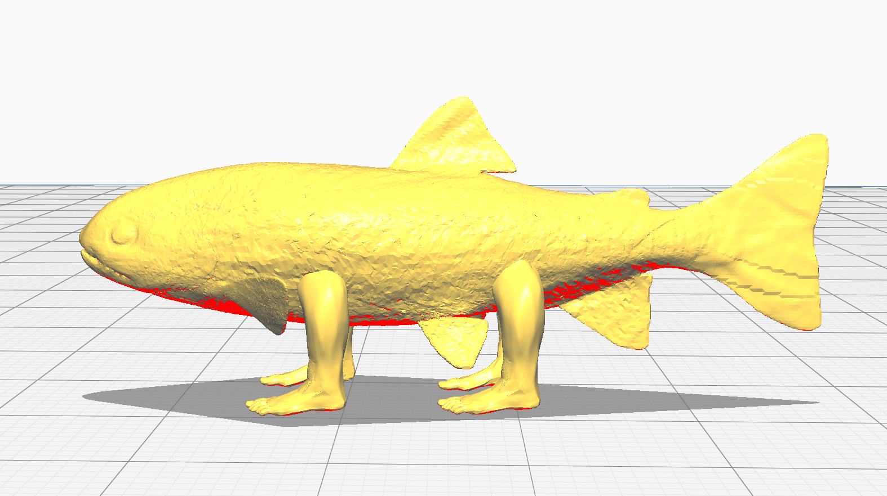
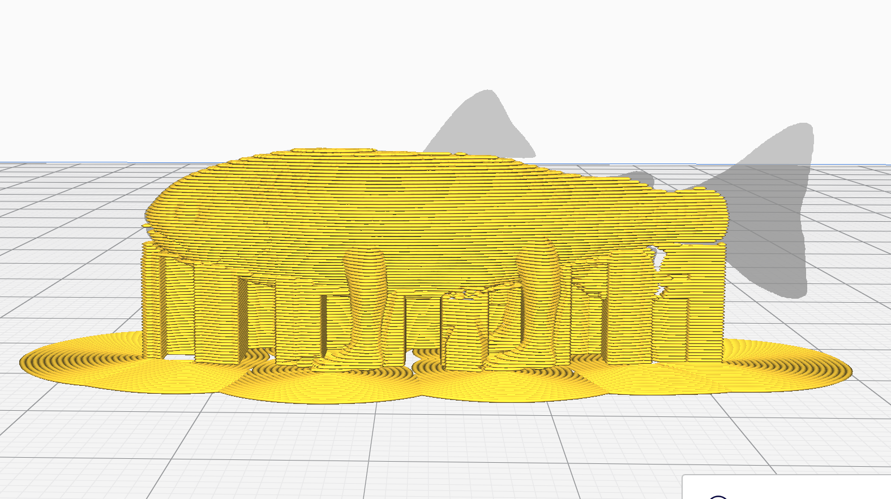
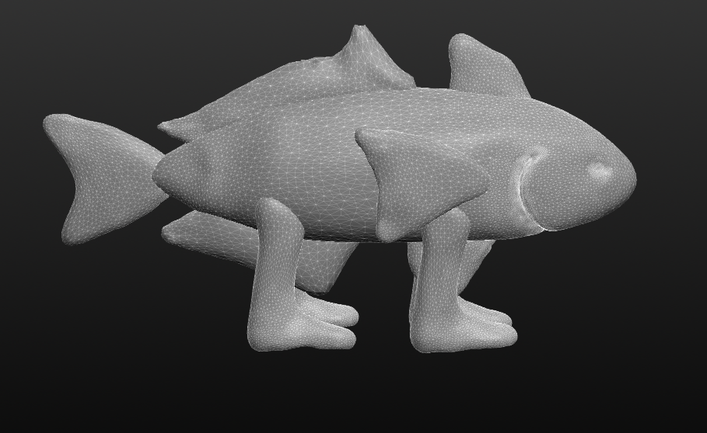
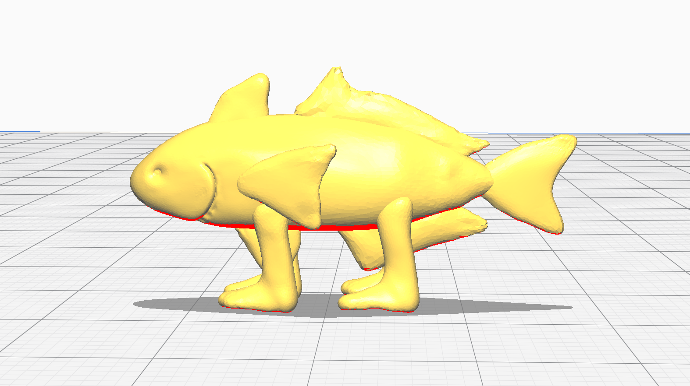
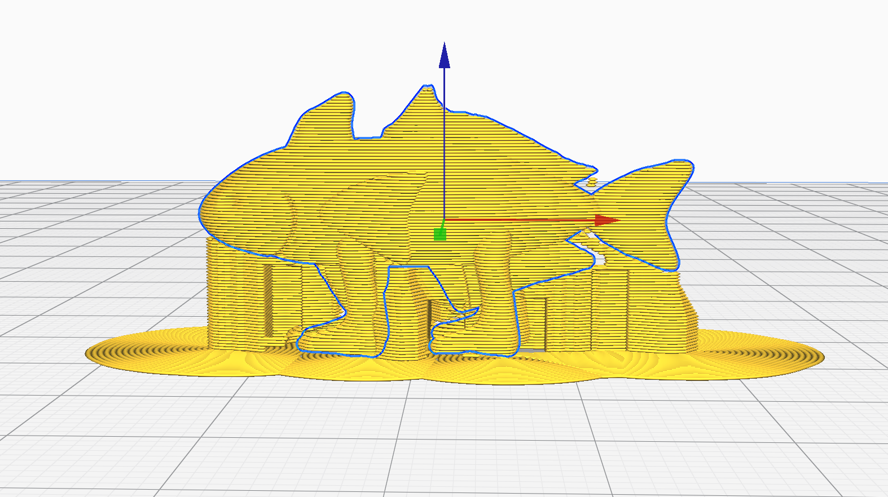
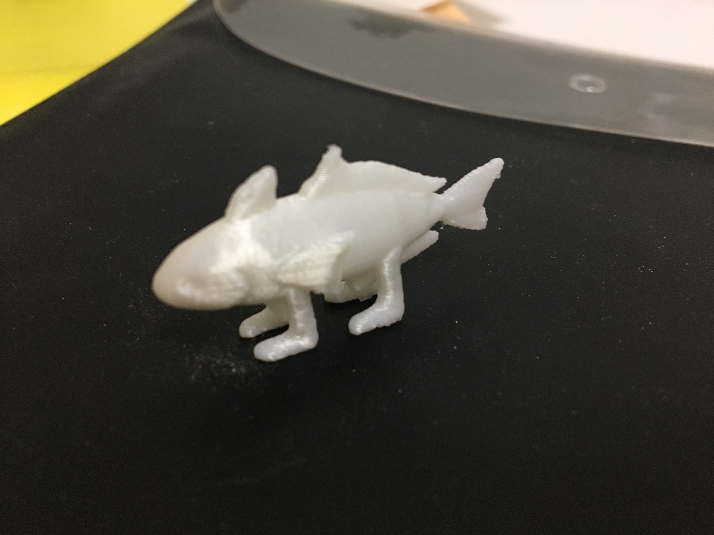

大事なことなので（ry
3Dプリンターを作った。3Dプリンターで何かを作った訳では…いや、最終的に出力はしたのだが3Dプリンター作ったのも何かの間違いではない。
正確には作ったというか組み立てた。半完成形で梱包しやすいようある程度バラされていた部品を組んだ感じだ。それでもまぁ大変だったが。
何せ日常生活であまり3Dプリンターを組み立てるシチュエーションに遭遇する事はない。手に汗握りながらの作業だった。
b題
お値段¥50000とちょっと。お買い求めは
こちらまで。
買って組み立てるが良い。そして俺たちと同じ苦しみを味わうのだ。
即ち、説明書が見つからない。いや、組み立て式として致命的じゃないの、それ？？と思ったがどれだけ目を凝らしても説明書と思しき書類は見
当たらない。
なお、付属のQRコードを読み込むと取説
に飛べた。
更に、英語だが更に詳しい奴も見つかった。
極め付けに
Amazonのレビューにて付属のmicroSDに←説明書が入ってる
ことが判明。なお見つかったのは組み立て終盤近くだった←
手順は大まかに分けて
1.箱から出す
2.説明書を探す
3.土台を組み立てる
4.配線
5.装飾・フィラメント取り付け
6.電源投入
7.動作確認・水平出し
8.データ作成
9.出力
こんな感じ。詳しい手順の方は共同作成の方のwebページを参照頂きたい。もう一回おんなじようなの書くのやだ。
データ作成
という訳で個々の作業に分岐したデータ作成と出力に力を入れてレポートを書く。
test finderで好みの3Dオブジェクトを拾ってきて出力。
何か無いかなーと探していると…

あらやだこの子可愛い。
という訳でこの
Evolution - Fishちゃんを出力したいと思う。
まずスライサー（slicer）のUnimaker Cura（通称Cura=キュラ）という、3Dオブジェクトを仮想の3Dプリンター上に配置する。
サイズ調整や向き調整をして、3Dプリンターでプリント出来るファイル形式（.gcode形式）に変換するためだ。
と、ここで問題が発生。

配置までは良かったのだが、いざオブジェクトをスライスして出力してみると…

ご覧の通り。詳しくは共用のwebページの方に書くが、出力出来るのは0.5mm以上で、私のように出力時間を抑える為とはいえ縮小し過ぎると、0.5mm以下の
部分は容赦無く切り捨てられるようだ。
と、言う訳で。

作った。ソフトはsculptris。

objファイルでエクスポートしたら、上手く読み込んでくれた。二度目のスライスチャレンジ。

今度は上手く背びれとかも出力してくれる様子。全体的に丸っこく、ヒレを厚く成型したのが功を奏したようだ。
出力
microSDにgcode形式で書き出したスライスデータを保存。3Dプリンターに差し込んで、自分のファイルを選択。
それだけですぐにノズルを加熱して出力準備を始めてくれた。
出力中の動画は他の人が色々撮ってるだろーから私は撮らない。ので、完成物だけ。

サポートが大量に付いていたのを全て取り払った。
e題
f題